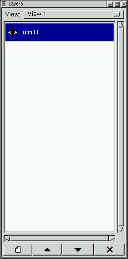

|  |
-
The option menu at the top of the dialog may be used to select a view
to operate on. Selecting an alternate view will cause that view to be
popped up, as well as displaying the views layers in the Layers Management
Dialog.
- Each layer is listed with it's name (typically the file it comes from),
and an eye icon (if visible). The order of the layers indicates their
precidence when drawn, with the top most layer in the list drawn over
all other layers.
- Left clicking on a layer will cause it to become the selected
(highlighted) layer. Many operations such as enhancements, and vector
editing operate on the selected layer of the selected view.
- Clicking on the eye will cause the layer to toggle between
being visible, and not being visible.
- Right clicking on the layer will cause a layer properties dialog to
be displayed.
|